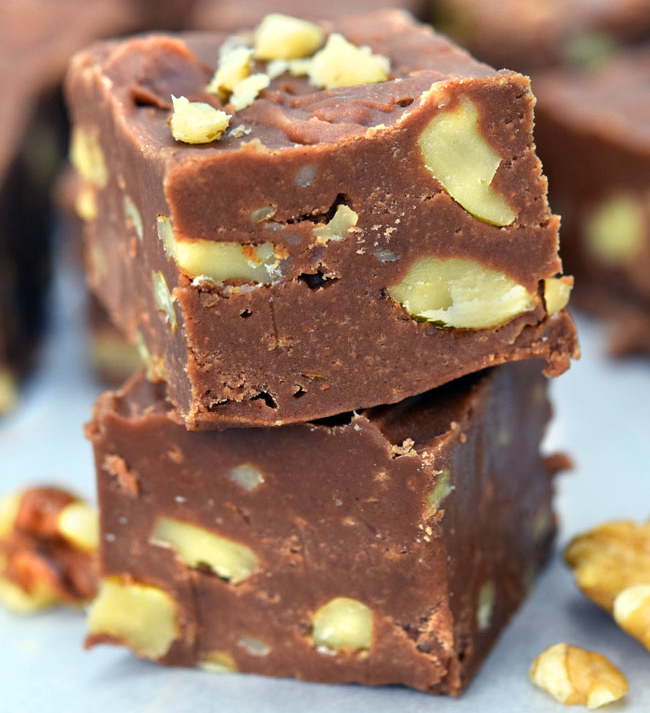

Cikolatali ve sam fistikli tadimlik lezzetler... Yalnizca dort
malzeme ile hazirlanan cikolata kupleri, renkli kagitlarla veya
kurdan batirilarak servis edilir. Ozellikle kalabalik sofralarda yer
verilen cikolata kupleri, dogum gunu gibi ozel etkinliklerde de
kullanilabilir.
Tarif: Rukiye Beyza Sarikaya

Kac Kisilik: 4 Kisilik
Hazirlanma Suresi: 30 Dk
Pisirme Suresi: 10 Dk.
Malzeme Listesi
350 gr bitter cikolata.
150 ml krema.
1 corba kasigi tereyagi.
150 gr sam fistigi. (Badem veya findik da olabilir)
Cikolata Kupleri Nasil Yapilir?
Bitter cikolatayi benmari usulu eritin.
Eriyen cikolatanin uzerine krema ve tereyagini ekleyip iyice
karistirip tencereyi bir tezgaha alin.
Sam fistiklarini havanda cok az dovup irili ufakli parcalara bolun.